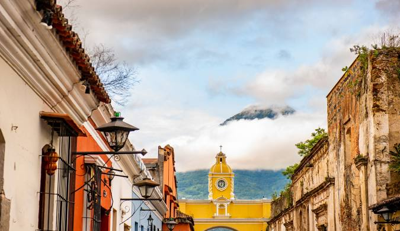

Les damos la más cordial bienvenida a Antigua Guatemala, una de las ciudades más hermosas e históricas de Guatemala. Este lugar es reconocido por su arquitectura colonial, sus calles empedradas, sus tradiciones culturales y sus impresionantes paisajes rodeados de volcanes.
Antigua Guatemala es un destino lleno de historia, cultura y belleza, donde cada rincón cuenta una parte importante del pasado del país.
Esperamos que disfruten su visita y descubran todo lo que hace especial a esta maravillosa ciudad llena de tradición y encanto.
